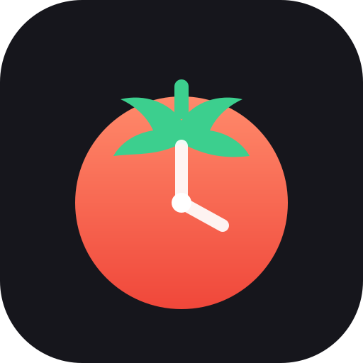

Pomodoro
Soustředění
Krátká pauza
Dlouhá pauza
Soustředění
25:00
Kolo 1 ze 4
Na čem pracuješ
Nastavení
Délky (minuty)
Soustředění
Krátká pauza
Dlouhá pauza
Dlouhá pauza po
počet pomodor v sadě
Denní cíl
pomodor za den
Průběh
Automaticky spustit pauzu
Automaticky spustit další pomodoro
Nechat displej zapnutý
když časovač běží
Upozornění
Zvuk
Hlasitost
Vibrace
Oznámení
i když je aplikace na pozadí
Vyzkoušet
Přehrát upozornění
Vzhled
Motiv
Auto
Tmavý
Světlý
Obnovit výchozí nastavení
Statistiky
0
dnes
0
7 dní
0
dní v řadě
0 h
celkem
Posledních 7 dní
Dnešní bloky
Smazat statistiky
Jak na Pomodoro
Vyber si jeden úkol.
Napiš ho do pole „Na čem teď pracuješ?“.
25 minut soustředění.
Pracuješ jen na tom úkolu – bez telefonu, zpráv a sociálních sítí.
Když tě něco napadne,
zapiš si to na papír a vrať se k práci. Vyřešíš to v pauze.
5 minut krátká pauza.
Vstaň, protáhni se, napij se. Nedívej se do obrazovky.
Po 4 pomodorech dlouhá pauza
15–30 minut. Pak začíná nová sada.
Tip:
Když pomodoro přerušíš, nepočítá se. Raději ho restartuj a začni znovu – smyslem je nepřerušený blok soustředění.
Ovládání
Spustit / pozastavit
Mezerník
Restartovat blok
R
Přeskočit na další
S
Opravdu?
Zrušit
Potvrdit